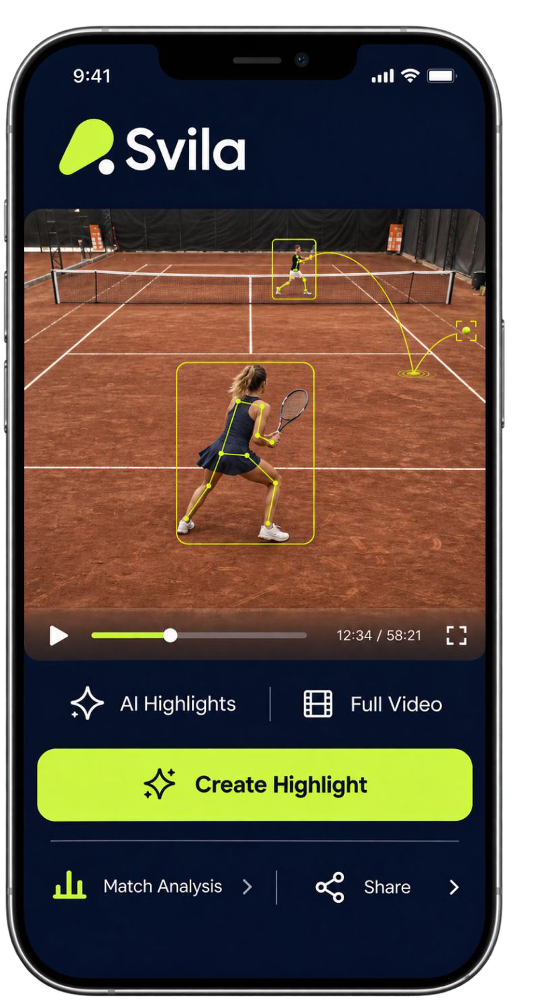

Partida completa
Volte àquele ponto e assista ao jogo inteiro quando quiser.
JÁ NA MONTREAL · QUADRA 04
Grave a partida. Reveja os melhores pontos. Compartilhe com quem jogou com você.
Um guia rápido, do primeiro saque ao replay.

Interface ilustrativa. Análise completa por IA em desenvolvimento.01 / SEU JOGO, DO SEU JEITO
A Svila transforma sua partida em um vídeo para assistir, guardar e compartilhar.
Disponível por enquanto na quadra 04.
A Montreal planeja levar a experiência às demais quadras.
Volte àquele ponto e assista ao jogo inteiro quando quiser.
Crie highlights, baixe os vídeos e compartilhe os lances.
Tenha seus vídeos reunidos na sua conta Svila.
02 / ACTIVE PLAY & HIGHLIGHTS
A IA acompanha a bola para identificar as trocas e tirar os intervalos do vídeo.
Você recebe uma versão mais curta, com a bola em jogo, e highlights gerados automaticamente. Mais fácil de rever. Melhor para compartilhar.
Pontos + pausas entre as jogadas.
Esquema ilustrativo. Toque nos botões para comparar.
Active Play já está disponível.
É diferente da análise completa de desempenho, que ainda está em desenvolvimento.
03 / ANTES DA PARTIDA
Você pode iniciar a gravação antes de entrar em quadra.
Use o QR de gravação da quadra 04 para acessar a Svila.
Selecione a duração e as ferramentas disponíveis para sua partida.
A gravação termina automaticamente ao fim do período escolhido.
04 / DEPOIS DA PARTIDA
Na quadra 04, a gravação automática já está ativa. Você também pode resgatar o vídeo depois do jogo.
Com o Proactive Recording, você não precisa iniciar a gravação antes de jogar.
Abra a Svila depois da partida.
Selecione a quadra 04 e o intervalo em que vocês jogaram.
Confirme o vídeo e as ferramentas disponíveis. Depois, assista e compartilhe.
05 / CABE NO SEU JOGO
Compartilhe a gravação com seus parceiros e combinem a divisão do valor entre vocês.
GRAVAÇÃO + FERRAMENTAS DISPONÍVEIS
Pela gravação, com os recursos atualmente disponíveis na quadra 04.
Dividindo entre quantos jogadores?
Exemplo de divisão combinada entre os jogadores.
O valor total da gravação continua sendo R$ 25.
06 / O QUE VEM DEPOIS
A análise completa de desempenho por IA ainda está em desenvolvimento.
Tennis Full Analysis vai além de cortar as pausas: acompanha bola, golpes, jogadores e postura corporal para gerar dados do jogo.
PREVISÃO DA SVILA: FIM DE 2026RECURSOS PREVISTOS · AINDA NÃO DISPONÍVEIS
Também em desenvolvimento: Smart Crop para Reels, para adaptar o enquadramento dos vídeos.
Previsão informada pela Svila, sujeita a atualização. A análise completa não faz parte da oferta atual de R$ 25.
07 / PRONTO PARA REVER?
Na sua próxima partida na quadra 04, use o QR de gravação da quadra para acessar seu vídeo.
Acessar plataforma Svila ↗Precisa de ajuda? Fale com a recepção da Montreal.
Por enquanto, somente na quadra 04. A Montreal planeja expandir o sistema para as demais quadras.
Não. Você acessa a Svila pelo navegador do celular, a partir do QR de gravação da quadra.
O vídeo pode ser pago depois do jogo. Nos pedidos com processamento por IA, o pagamento precisa estar confirmado para o processamento começar. Você também pode fazer todo o pedido após a partida.
A gravação e as ferramentas atualmente disponíveis na quadra 04, como Active Play e highlights. A análise completa de desempenho por IA ainda está em desenvolvimento e não está incluída nessa oferta.
A plataforma conta com painel para gerenciar quadras e gravações, transmissão de torneios e aplicação das marcas do clube e de patrocinadores nos vídeos. Club TV também integra os recursos da plataforma; a utilização na Montreal depende da implantação pelo clube.